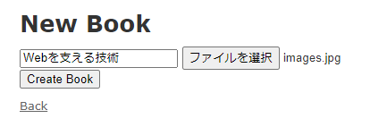
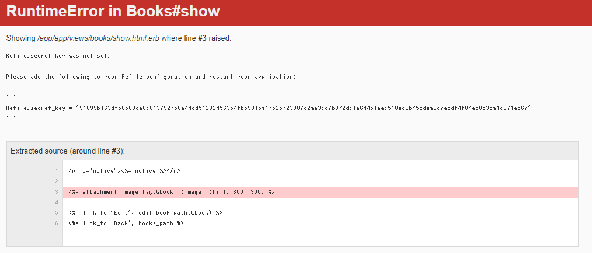

プロジェクトで使っている箇所があったので試しに触ってみようという記事です。
Rails5 + MySQL + DockerでRails部分が動けばいいので下記を参考に進めました。
丁寧すぎるDocker-composeによるrails5 + MySQL on Dockerの環境構築(Docker for Mac) - Qiita
プロジェクトの作成
まずはプロジェクトの作成を行います。
mkdir -p ~/tmp/sample-rails
cd ~/tmp/sample-rails
Dockerfileの作成
vi Dockerfile
Dockerfileの中身。
imagemagickはrefile用。
FROM ruby:2.6.5
RUN apt-get update -qq && \
apt-get install -y build-essential \
libpq-dev \
nodejs \
imagemagick
RUN mkdir /app
ENV APP_ROOT /app
WORKDIR $APP_ROOT
COPY ./Gemfile $APP_ROOT/Gemfile
COPY ./Gemfile.lock $APP_ROOT/Gemfile.lock
RUN bundle install
COPY . $APP_ROOT
Gemfileを作成、編集
vi Gemfile
Gemfileの中身。
source 'https://rubygems.org'
gem 'rails', '5.2.6'
空のGemfile.lockを作成
touch Gemfile.lock
docker-compose.ymlを作成、編集
vi docker-compose.yml
docker-compose.ymlの中身。
dbのデータとbundleのデータはvolumesで永続化しています。
version: '3'
services:
db:
image: mysql:5.7
volumes:
- db_data:/var/lib/mysql # <= dbデータを永続化
environment:
MYSQL_ROOT_PASSWORD: password
MYSQL_DATABASE: root
ports:
- "3306:3306"
web:
build: .
command: rails s -p 3000 -b '0.0.0.0'
stdin_open: true # <= Dockerでpryを止めるのに必要
tty: true # <= Dockerでpryを止めるのに必要
volumes:
- .:/app
- bundle_data:/usr/local/bundle # <= gemデータを永続化
- /etc/group:/etc/group:ro
- /etc/passwd:/etc/passwd:ro
ports:
- "3000:3000"
links:
- db
volumes:
db_data:
bundle_data:
rails newを実行する
docker-compose run -u 1000:1000 web rails new . --force --database=mysql --skip-bundle
webコンテナ上でrails new ~ が走る。
docker-compose.ymlでvolumesでコンテナのappフォルダをホストのカレントディレクトリに共有するのでrails newで作られたファイル等がホスト側にできる。
.
├── Dockerfile
├── Gemfile
├── Gemfile.lock
├── README.md
├── Rakefile
├── app
├── bin
├── config
├── config.ru
├── db
├── docker-compose.yml
├── lib
├── log
├── package.json
├── public
├── storage
├── test
├── tmp
└── vendor
docker-compose.ymlとrails newコマンド解説
私の環境はWindows10 + WSL2 + DockerでWSL上でDockerコンテナを動かしています。
WSL上でDockerコンテナを実行しDockerコンテナで作成されたファイルのパーミッションはWSLからみるとrootになっており、編集ができない。
そのため、下記を参考にした。
dockerでvolumeをマウントしたときのファイルのowner問題 - Qiita
記事だとdocker run時にオプションでいろいろ渡している。
今回はdocker-composeコマンドを使う。
docker-compose runコマンドには-uオプションはあるが-vオプションはない。
run — Docker-docs-ja 19.03 ドキュメント
そのため、-vオプションの内容はdocker-compose.ymlに記載している。
/etc/groupと/etc/passwdを読み取り権限でコンテナに共有している。
volumes:
- .:/app
- /etc/group:/etc/group:ro
- /etc/passwd:/etc/passwd:ro
そして、docker-composeコマンドは-u 1000:1000でWSLと同じ実行権限を指定している。
このおかげでコンテナ上での実行ユーザーは1000:1000になり、WSLのユーザーと同じになるため、パーミッションエラーは出ずに編集することができた！
これは私の中では結構大きな発見。
また、この実行ユーザーを指定するのは実際に自分が触るファイルが生成されるときだけでとりあえず大丈夫そうだ。
あとから権限を変更する場合は下記コマンドを実行すれば問題ない。
sudo chown -R $(whoami) .
database.ymlの編集
vi config/database.yml
default: &default
adapter: mysql2
encoding: utf8
username: root
password: password
host: db
コンテナ起動
docker-compose build
docker-compose up
build時にエラー
#11 2.607 Your Ruby version is 2.6.5, but your Gemfile specified 2.5.3
GemfileのRubyのバージョンを2.6.5にする。
DB作成
docker-compose run web rails db:create
refile gemの導入
refileの使い方徹底解説｜まろん｜note refileの使い方徹底解説②｜まろん｜note
Gemfileに追加
gem "refile", require: "refile/rails", github: 'manfe/refile'
gem "refile-mini_magick"
# developmentの中に記載。動作確認用
gem 'pry-rails'
gem 'pry-byebug'
bundle installする。
docker-compose run web bundle install
scaffoldを使って一気に作成。
docker-compose run -u 1000:1000 web rails g scaffold book
Creating sample-rails_web_run ... done
Rails Error: Unable to access log file. Please ensure that /app/log/development.log exists and is writable (ie, make it writable for user and group: chmod 0664 /app/log/development.log). The log level has been raised to WARN and the output directed to STDERR until the problem is fixed.
invoke active_record
create db/migrate/20210605023809_create_books.rb
create app/models/book.rb
invoke test_unit
create test/models/book_test.rb
create test/fixtures/books.yml
invoke resource_route
route resources :books
invoke scaffold_controller
create app/controllers/books_controller.rb
invoke erb
create app/views/books
create app/views/books/index.html.erb
create app/views/books/edit.html.erb
create app/views/books/show.html.erb
create app/views/books/new.html.erb
create app/views/books/_form.html.erb
invoke test_unit
create test/controllers/books_controller_test.rb
create test/system/books_test.rb
invoke helper
create app/helpers/books_helper.rb
invoke test_unit
invoke jbuilder
create app/views/books/index.json.jbuilder
create app/views/books/show.json.jbuilder
create app/views/books/_book.json.jbuilder
invoke assets
invoke coffee
create app/assets/javascripts/books.coffee
invoke scss
create app/assets/stylesheets/books.scss
invoke scss
create app/assets/stylesheets/scaffolds.scss
最低限、image_idカラムがあればよいがメタデータも保存できるようなので、image_filename、image_size、image_content_typeも追加している。
class CreateBooks < ActiveRecord::Migration[5.2]
def change
create_table :books do |t|
t.string :title
t.string :image_id
t.string :image_filename
t.string :image_size
t.string :image_content_type
t.timestamps
end
end
end
マイグレーションする。
docker-compose run web rails db:migrate
Bookモデルにattachmentメソッドも追加する。
今回はimage_idというカラムを追加したので、_idを取ったimageにする。
class Book < ApplicationRecord
attachment :image
end
タイトルと画像を保存できるようにします。
画像をアップロードするためのヘルパーattachment_fieldをrefileが用意しているのでそれを使います。
app/views/books/new.html.erb
<h1>New Book</h1>
<%= form_with(model: @book, local: true) do |f| %>
<%= f.text_field :title %>
<%= f.attachment_field :image %>
<div class="actions">
<%= f.submit %>
</div>
<% end %>
<%= link_to 'Back', books_path %>
こんな感じの画面になります。

実際に画像をアップロードできるようにコントローラーのbook_params部分を修正します。
app/controllers/books_controller.rb
def book_params
params.require(:book).permit(:title, :image)
end
タイトルと画像を選択して、Create Bookします。

下記を見るとわかりますが、newしたタイミングではimage_idはnilです。
それ以外のメタデータのimage_filename、image_size、image_content_typeは自動的に値が入っています。
saveしたタイミングでimage_idが自動的に入るようです。
デフォルトだとファイルはtmp/uploads/storeに保存されていました。
ファイル名とimage_idが同じことが確認できます。

From: /app/app/controllers/books_controller.rb:25 BooksController#create:
23: def create
24: binding.pry
=> 25: @book = Book.new(book_params)
26:
27: respond_to do |format|
28: if @book.save
29: format.html { redirect_to @book, notice: "Book was successfully created." }
30: format.json { render :show, status: :created, location: @book }
31: else
32: format.html { render :new, status: :unprocessable_entity }
33: format.json { render json: @book.errors, status: :unprocessable_entity }
34: end
35: end
36: end
[1] pry(#<BooksController>)> @book = Book.new(book_params)
=> #<Book:0x00007f380028ccd0
id: nil,
title: "Webを支える技術",
image_id: nil,
image_filename: "images.jpg",
image_size: "8704",
image_content_type: "image/jpeg",
created_at: nil,
updated_at: nil>
[2] pry(#<BooksController>)> @book.save
(0.2ms) BEGIN
↳ (pry):13
Book Create (0.3ms) INSERT INTO `books` (`title`, `image_id`, `image_filename`, `image_size`, `image_content_type`, `created_at`, `updated_at`) VALUES ('Webを支える技術', 'c7a3726e49e1f1443f7e6e180ca45ded1074b02c632d753026f149145751', 'images.jpg', '8704', 'image/jpeg', '2021-06-05 08:54:13', '2021-06-05 08:54:13')
↳ (pry):13
(3.0ms) COMMIT
↳ (pry):13
=> true
[3] pry(#<BooksController>)> @book
=> #<Book:0x00007f380028ccd0
id: 2,
title: "Webを支える技術",
image_id: "c7a3726e49e1f1443f7e6e180ca45ded1074b02c632d753026f149145751",
image_filename: "images.jpg",
image_size: "8704",
image_content_type: "image/jpeg",
created_at: Sat, 05 Jun 2021 08:54:13 UTC +00:00,
updated_at: Sat, 05 Jun 2021 08:54:13 UTC +00:00>
今度はViewに保存した画像を表示します。
app/views/books/show.html.erb
<p id="notice"><%= notice %></p>
<%= attachment_image_tag(@book, :image, :fill, 300, 300) %>
<%= link_to 'Edit', edit_book_path(@book) %> |
<%= link_to 'Back', books_path %>
bookのshowページにアクセスすると下記エラーが出ました。

Refileの設定に以下を追加し、アプリケーションを再起動してください。
とありますので設定を行い、再起動します。
config/initializers/application_controller_renderer.rbに設定を行います。
再度bookのshowページにアクセスすると表示されました！

一通り、画像のアップロードと表示をrefile gemを使ってやってみました。
まとめ
ざっくりやっていることが理解できた。
- gem入れる
{アタッチメント名}_idカラムをモデルに追加する- ほかにも
{アタッチメント名}_filename,{アタッチメント名}_size,{アタッチメント名}_content_typeなどのメタデータのカラムを追加することもできる。
- ほかにも
- モデルに
attachment :{アタッチメント名}する - アップロードには
attachment_fieldヘルパーを使う - 表示には
attachment_image_tagを使う